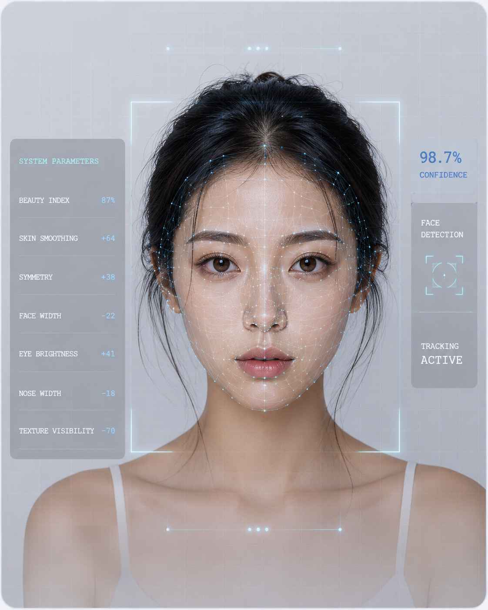

REFERENCE NOTE
Technical systems often present themselves as objective, while carrying human assumptions.
Broussard, 2018SYSTEM PARAMETERS

ANALYSING FACE...
CORRECTION MODEL ACTIVE
04 / ALGORITHMIC BEAUTY
Algorithmic Beauty
Beauty filters translate the face into adjustable parameters.
Behind the smooth surface of the filtered selfie, the face is broken into measurable values: skin texture, symmetry, brightness, eye size and facial contour. Beauty becomes something that can be detected, ranked and corrected.
The algorithm does not simply enhance the image. It decides what counts as improvement. In doing so, it turns cultural beauty standards into technical instructions.
THEORETICAL FRAME
Safiya Umoja Noble argues that algorithms are not neutral systems, but can reproduce social values and biases. This helps frame beauty filters as technologies that encode particular ideals of attractiveness into the face.
Noble, 2018